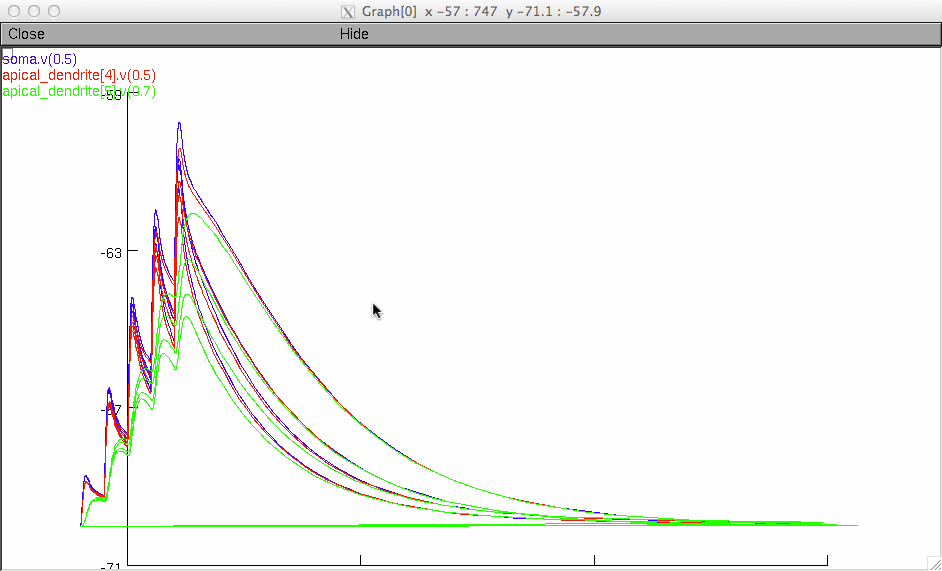

This model simulates the contribution of dendritic Na+ and D-type K+ channels to EPSPs at three different locations of apical dendrites, which mimicking innervation sites of mossy fibers (MF), recurrent fibers (AC), and perforant pathway (PP). The model files are associated with the figure 7 of the paper: Jung Ho Hyun, Kisang Eom, Kyu-Hee Lee, Jin Young Bae, Yong Chul Bae, Myoung-Hwan Kim, Sooyun Kim, Won-Kyung Ho and Suk-Ho Lee (2015) Kv1.2 mediates heterosynaptic modulation of direct cortical synaptic inputs in CA3 pyramidal cells. J. Physiol. 593(16): 3617-3643. In this paper, we investigated the cellular mechanisms underlying MF-induced heterosynaptic long-term potentiation of perforant path (PP) inputs to CA3 pyramidal cells. We showed that this heterosynaptic potentiation is mediated by downregulation of Kv1.2 channels, which comprises D-type K current. The downregulation of Kv1.2 preferentially enhanced PP-evoked EPSPs which occur at distal apical dendrites. Such enhancement of PP-EPSPs required activation of dendritic Na+ channels, and its threshold was lowered by downregulation of Kv1.2. You can reproduce each panel in Fig 7 of the paper by running corresponing hoc file, after compiling the mod files. You can also start with the mosinit.hoc (with nrngui) and click one of the buttons. See http://senselab.med.yale.edu/ModelDB/NEURON_DwnldGuide.html for more help downloading and running models. Note that the color codes for traces of Fig7C-E (for example the MF in 7Da):  are as follows: 1) blue, EPSPs at the soma 2) red, EPSPs at an apical dendrite of stratum radiatum (AC synaptic site) 3) green, EPSPs at an apical dendrite of stratum lacunosum moleculare (PP synaptic site) In Fig7C*.hoc and Fig7D*.hoc, EPSPs will be simlulated under the conditions of following order: 1) control 2) low Gkd (10% of control) 3) low Gkd & low dendritic Na channel (50%) 4) Normal Gkd & low dendritic Na channel